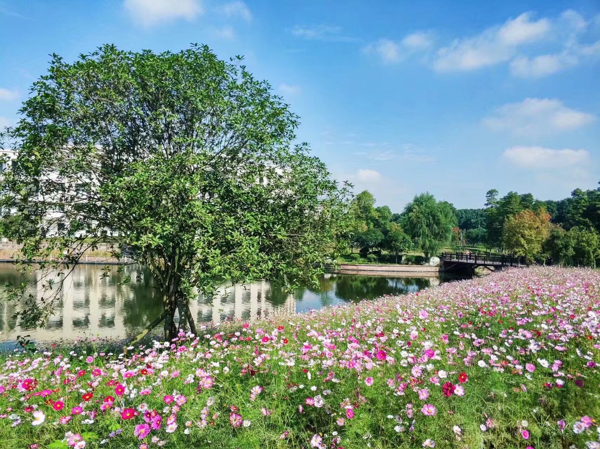

如果你来访我，我不在，请和我门外的花坐一会儿。
留给路过的你
A FEW DOORS TO OPEN
三扇门现在都开着，
随便推开一扇看看。
A FEW THINGS I KEEP
生活不必总是赶路，
有时停下来看看也很好。

如果你来访我，我不在，请和我门外的花坐一会儿。
留给路过的你
A NOTE ABOUT THIS PLACE
我是李伯檀。Folioverse 是我为自己搭建的一方小天地，想把喜欢的风景、正在思考的事，以及生活里闪闪发亮的小片段，慢慢放在这里。
谢谢你来，愿你也找到一个舒服的角落。